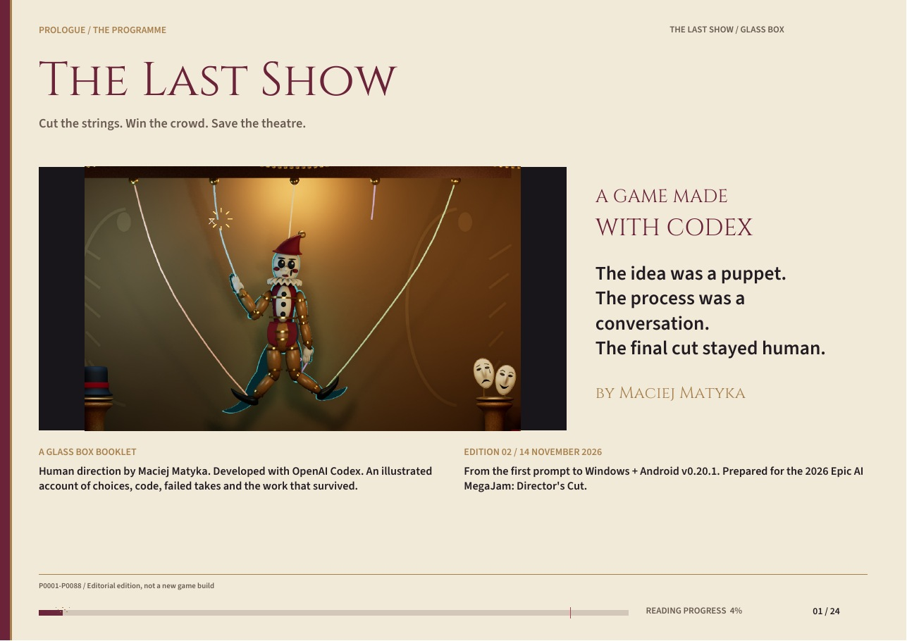
Read page 1 as text
The Last Show
Cut the strings. Win the crowd. Save the theatre.
A GLASS BOX BOOKLET
Human direction by Maciej Matyka. Developed with OpenAI Codex. An illustrated account of choices, code, failed takes and the work that survived.
EDITION 02 / 14 NOVEMBER 2026
From the first prompt to Windows + Android v0.20.1. Prepared for the 2026 Epic AI MegaJam: Director's Cut.
P0001-P0088 / Editorial edition, not a new game build
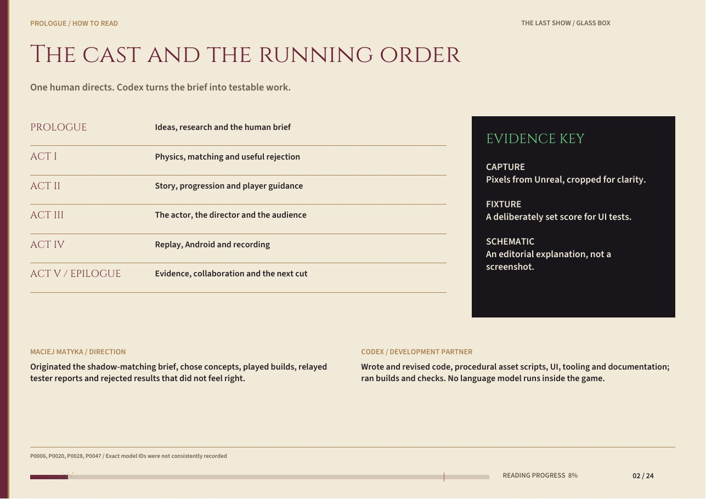
Read page 2 as text
The cast and the running order
One human directs. Codex turns the brief into testable work.
MACIEJ MATYKA / DIRECTION
Originated the shadow-matching brief, chose concepts, played builds, relayed tester reports and rejected results that did not feel right.
CODEX / DEVELOPMENT PARTNER
Wrote and revised code, procedural asset scripts, UI, tooling and documentation; ran builds and checks. No language model runs inside the game.
P0006, P0020, P0028, P0047 / Exact model IDs were not consistently recorded
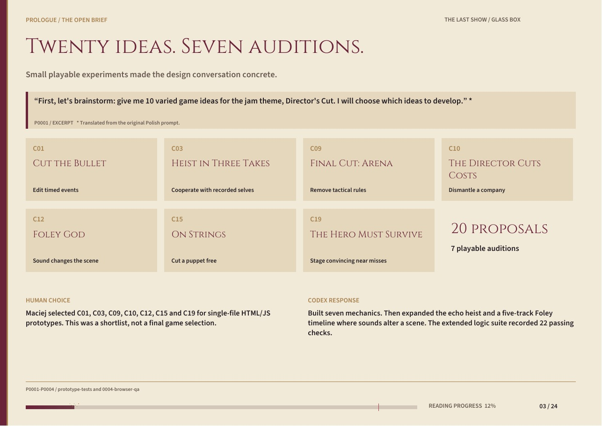
Read page 3 as text
Twenty ideas. Seven auditions.
Small playable experiments made the design conversation concrete.
“First, let's brainstorm: give me 10 varied game ideas for the jam theme, Director's Cut. I will choose which ideas to develop.” *
HUMAN CHOICE
Maciej selected C01, C03, C09, C10, C12, C15 and C19 for single-file HTML/JS prototypes. This was a shortlist, not a final game selection.
CODEX RESPONSE
Built seven mechanics. Then expanded the echo heist and a five-track Foley timeline where sounds alter a scene. The extended logic suite recorded 22 passing checks.
P0001-P0004 / prototype-tests and 0004-browser-qa
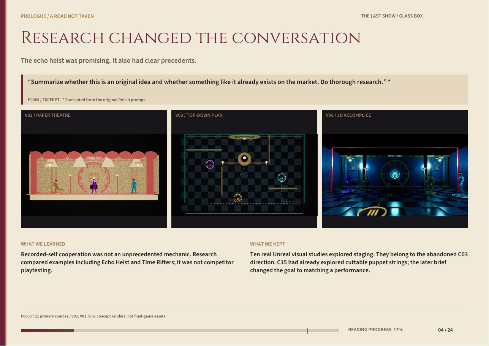
Read page 4 as text
Research changed the conversation
The echo heist was promising. It also had clear precedents.
“Summarize whether this is an original idea and whether something like it already exists on the market. Do thorough research.” *
WHAT WE LEARNED
Recorded-self cooperation was not an unprecedented mechanic. Research compared examples including Echo Heist and Time Rifters; it was not competitor playtesting.
WHAT WE KEPT
Ten real Unreal visual studies explored staging. They belong to the abandoned C03 direction. C15 had already explored cuttable puppet strings; the later brief changed the goal to matching a performance.
P0005 / 21 primary sources / V02, V03, V06: concept renders, not final-game assets
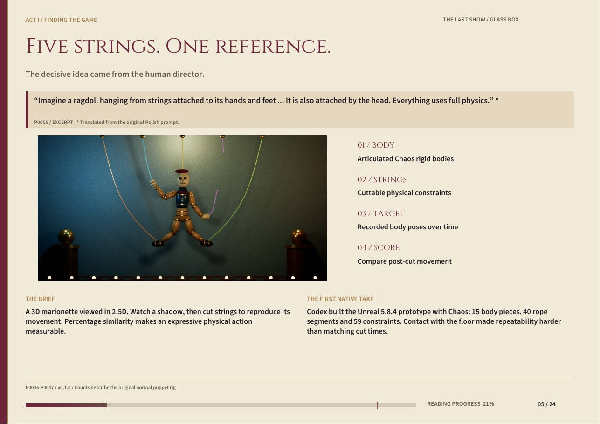
Read page 5 as text
Five strings. One reference.
The decisive idea came from the human director.
“Imagine a ragdoll hanging from strings attached to its hands and feet ... It is also attached by the head. Everything uses full physics.” *
THE BRIEF
A 3D marionette viewed in 2.5D. Watch a shadow, then cut strings to reproduce its movement. Percentage similarity makes an expressive physical action measurable.
THE FIRST NATIVE TAKE
Codex built the Unreal 5.8.4 prototype with Chaos: 15 body pieces, 40 rope segments and 59 constraints. Contact with the floor made repeatability harder than matching cut times.
P0006-P0007 / v0.1.0 / Counts describe the original normal puppet rig
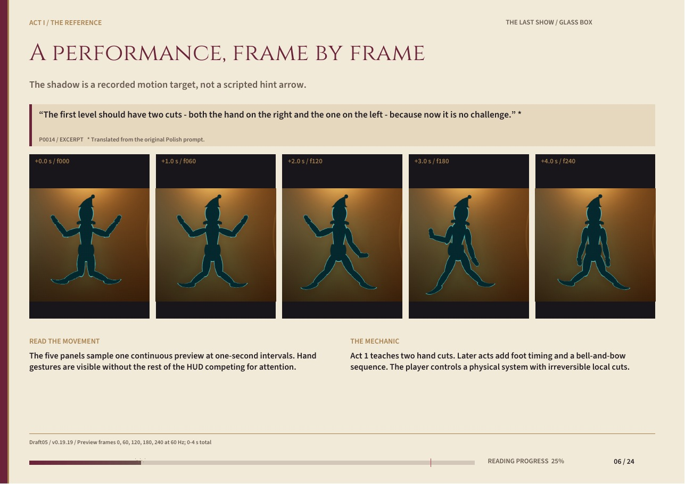
Read page 6 as text
A performance, frame by frame
The shadow is a recorded motion target, not a scripted hint arrow.
“The first level should have two cuts - both the hand on the right and the one on the left - because now it is no challenge.” *
READ THE MOVEMENT
The five panels sample one continuous preview at one-second intervals. Hand gestures are visible without the rest of the HUD competing for attention.
THE MECHANIC
Act 1 teaches two hand cuts. Later acts add foot timing and a bell-and-bow sequence. The player controls a physical system with irreversible local cuts.
Draft05 / v0.19.19 / Preview frames 0, 60, 120, 180, 240 at 60 Hz; 0-4 s total
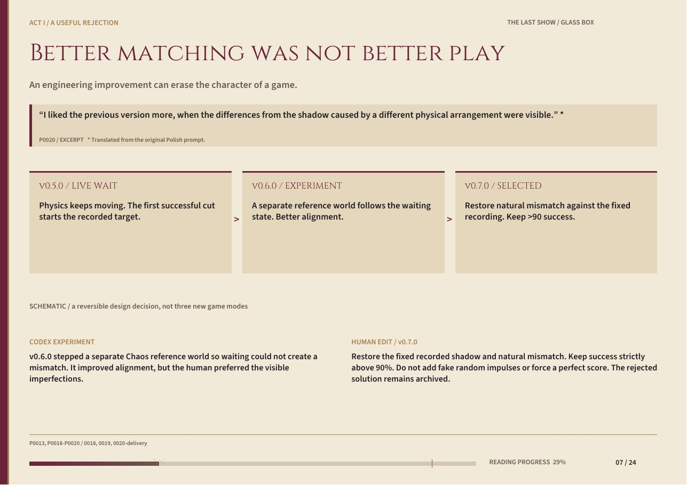
Read page 7 as text
Better matching was not better play
An engineering improvement can erase the character of a game.
“I liked the previous version more, when the differences from the shadow caused by a different physical arrangement were visible.” *
CODEX EXPERIMENT
v0.6.0 stepped a separate Chaos reference world so waiting could not create a mismatch. It improved alignment, but the human preferred the visible imperfections.
HUMAN EDIT / v0.7.0
Restore the fixed recorded shadow and natural mismatch. Keep success strictly above 90%. Do not add fake random impulses or force a perfect score. The rejected solution remains archived.
P0013, P0018-P0020 / 0018, 0019, 0020-delivery
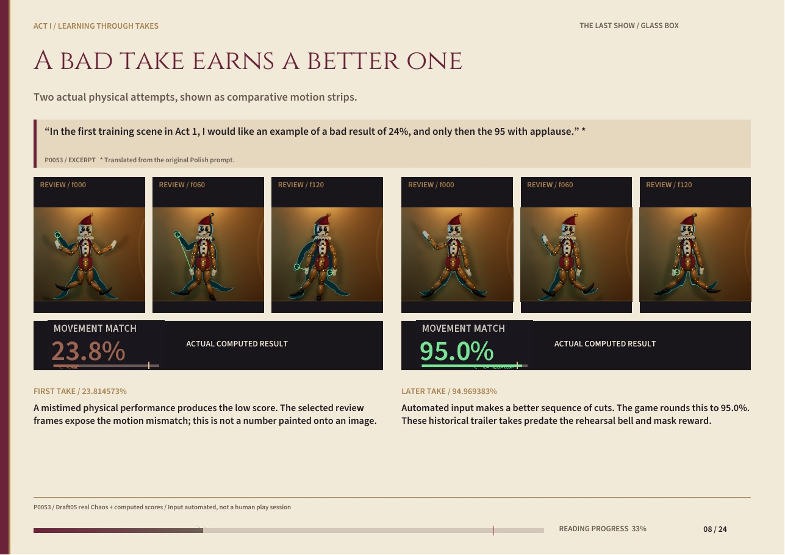
Read page 8 as text
A bad take earns a better one
Two actual physical attempts, shown as comparative motion strips.
“In the first training scene in Act 1, I would like an example of a bad result of 24%, and only then the 95 with applause.” *
FIRST TAKE / 23.814573%
A mistimed physical performance produces the low score. The selected review frames expose the motion mismatch; this is not a number painted onto an image.
LATER TAKE / 94.969383%
Automated input makes a better sequence of cuts. The game rounds this to 95.0%. These historical trailer takes predate the rehearsal bell and mask reward.
P0053 / Draft05 real Chaos + computed scores / Input automated, not a human play session
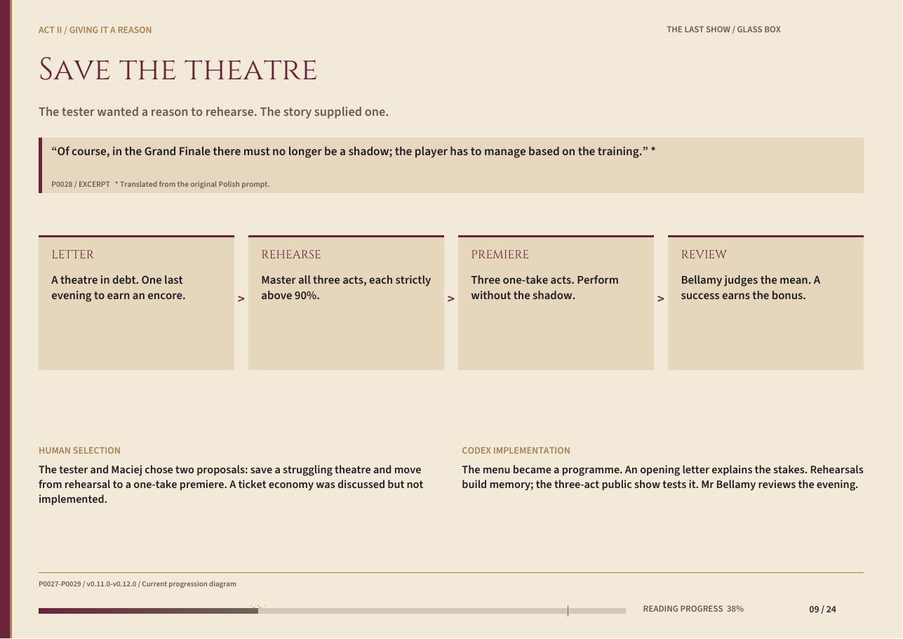
Read page 9 as text
Save the theatre
The tester wanted a reason to rehearse. The story supplied one.
“Of course, in the Grand Finale there must no longer be a shadow; the player has to manage based on the training.” *
HUMAN SELECTION
The tester and Maciej chose two proposals: save a struggling theatre and move from rehearsal to a one-take premiere. A ticket economy was discussed but not implemented.
CODEX IMPLEMENTATION
The menu became a programme. An opening letter explains the stakes. Rehearsals build memory; the three-act public show tests it. Mr Bellamy reviews the evening.
P0027-P0029 / v0.11.0-v0.12.0 / Current progression diagram
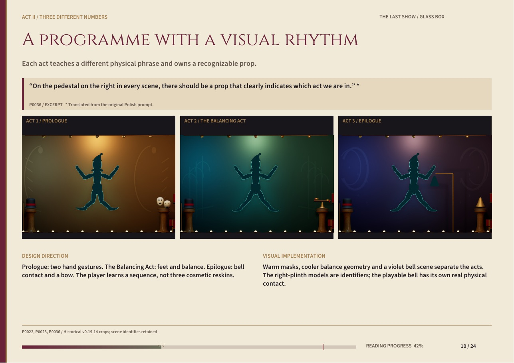
Read page 10 as text
A programme with a visual rhythm
Each act teaches a different physical phrase and owns a recognizable prop.
“On the pedestal on the right in every scene, there should be a prop that clearly indicates which act we are in.” *
DESIGN DIRECTION
Prologue: two hand gestures. The Balancing Act: feet and balance. Epilogue: bell contact and a bow. The player learns a sequence, not three cosmetic reskins.
VISUAL IMPLEMENTATION
Warm masks, cooler balance geometry and a violet bell scene separate the acts. The right-plinth models are identifiers; the playable bell has its own real physical contact.
P0022, P0023, P0036 / Historical v0.19.14 crops; scene identities retained
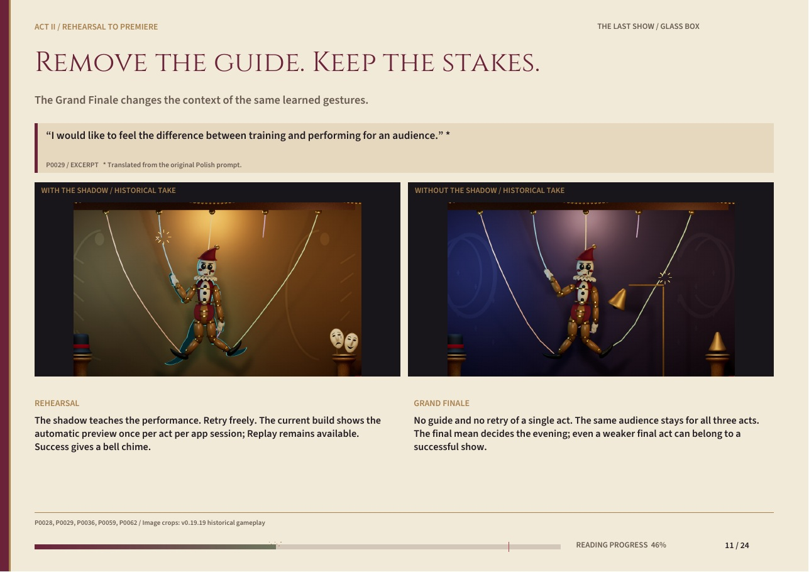
Read page 11 as text
Remove the guide. Keep the stakes.
The Grand Finale changes the context of the same learned gestures.
“I would like to feel the difference between training and performing for an audience.” *
REHEARSAL
The shadow teaches the performance. Retry freely. The current build shows the automatic preview once per act per app session; Replay remains available. Success gives a bell chime.
GRAND FINALE
No guide and no retry of a single act. The same audience stays for all three acts. The final mean decides the evening; even a weaker final act can belong to a successful show.
P0028, P0029, P0036, P0059, P0062 / Image crops: v0.19.19 historical gameplay
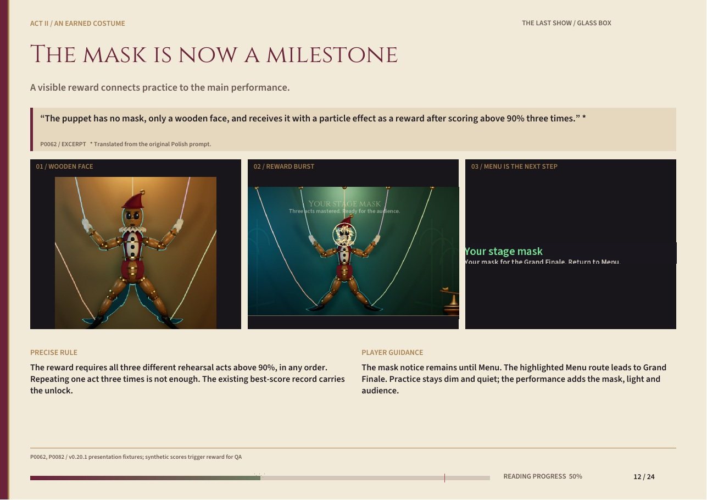
Read page 12 as text
The mask is now a milestone
A visible reward connects practice to the main performance.
“The puppet has no mask, only a wooden face, and receives it with a particle effect as a reward after scoring above 90% three times.” *
PRECISE RULE
The reward requires all three different rehearsal acts above 90%, in any order. Repeating one act three times is not enough. The existing best-score record carries the unlock.
PLAYER GUIDANCE
The mask notice remains until Menu. The highlighted Menu route leads to Grand Finale. Practice stays dim and quiet; the performance adds the mask, light and audience.
P0062, P0082 / v0.20.1 presentation fixtures; synthetic scores trigger reward for QA
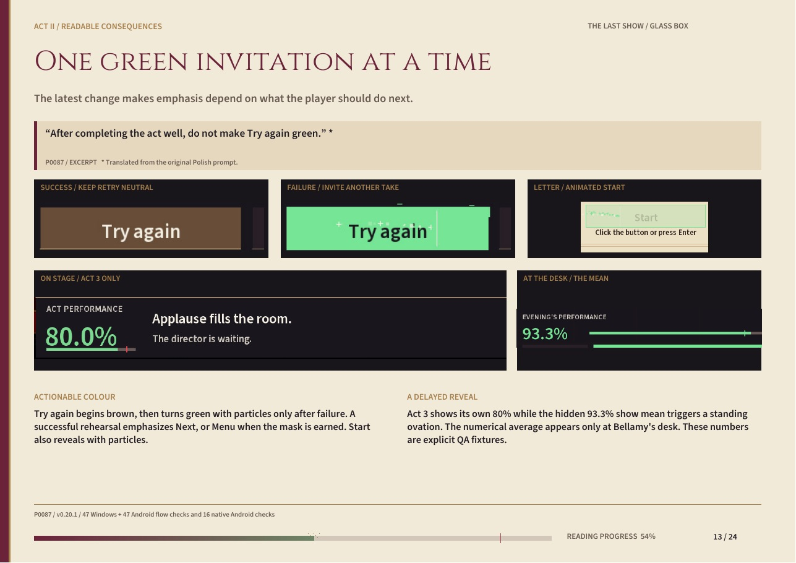
Read page 13 as text
One green invitation at a time
The latest change makes emphasis depend on what the player should do next.
“After completing the act well, do not make Try again green.” *
ACTIONABLE COLOUR
Try again begins brown, then turns green with particles only after failure. A successful rehearsal emphasizes Next, or Menu when the mask is earned. Start also reveals with particles.
A DELAYED REVEAL
Act 3 shows its own 80% while the hidden 93.3% show mean triggers a standing ovation. The numerical average appears only at Bellamy's desk. These numbers are explicit QA fixtures.
P0087 / v0.20.1 / 47 Windows + 47 Android flow checks and 16 native Android checks
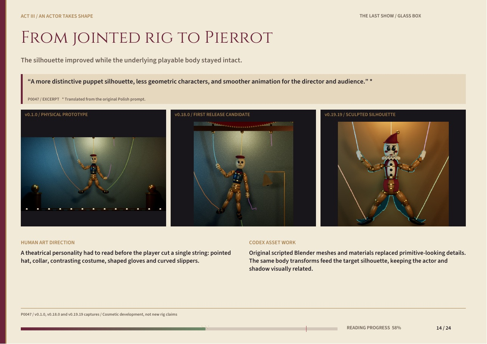
Read page 14 as text
From jointed rig to Pierrot
The silhouette improved while the underlying playable body stayed intact.
“A more distinctive puppet silhouette, less geometric characters, and smoother animation for the director and audience.” *
HUMAN ART DIRECTION
A theatrical personality had to read before the player cut a single string: pointed hat, collar, contrasting costume, shaped gloves and curved slippers.
CODEX ASSET WORK
Original scripted Blender meshes and materials replaced primitive-looking details. The same body transforms feed the target silhouette, keeping the actor and shadow visually related.
P0047 / v0.1.0, v0.18.0 and v0.19.19 captures / Cosmetic development, not new rig claims
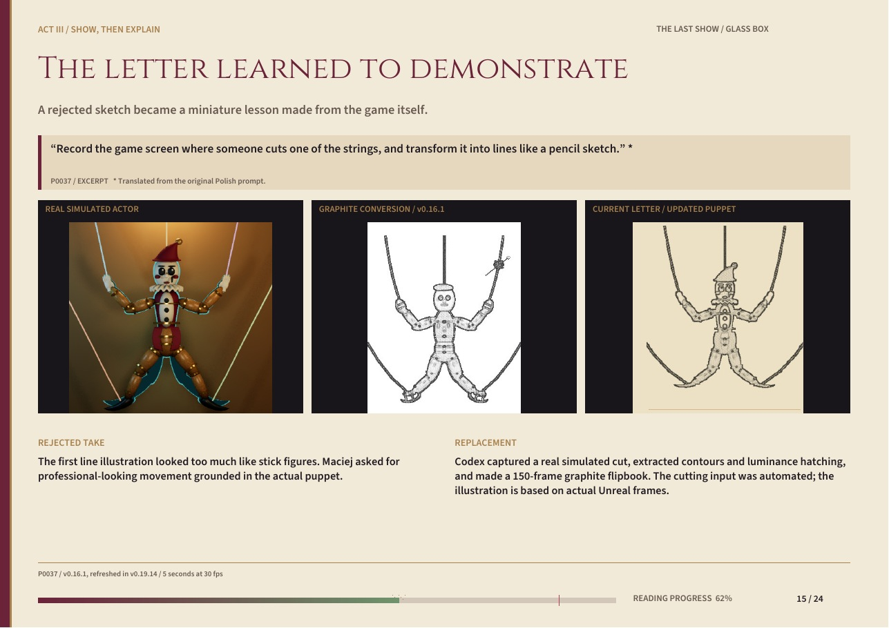
Read page 15 as text
The letter learned to demonstrate
A rejected sketch became a miniature lesson made from the game itself.
“Record the game screen where someone cuts one of the strings, and transform it into lines like a pencil sketch.” *
REJECTED TAKE
The first line illustration looked too much like stick figures. Maciej asked for professional-looking movement grounded in the actual puppet.
REPLACEMENT
Codex captured a real simulated cut, extracted contours and luminance hatching, and made a 150-frame graphite flipbook. The cutting input was automated; the illustration is based on actual Unreal frames.
P0037 / v0.16.1, refreshed in v0.19.14 / 5 seconds at 30 fps
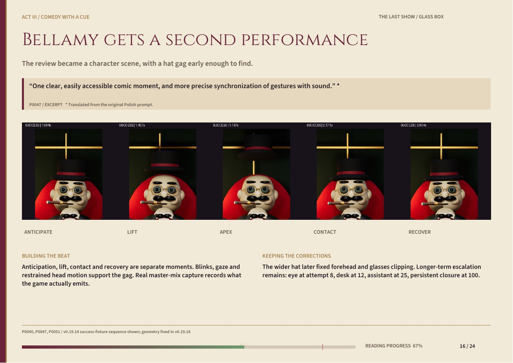
Read page 16 as text
Bellamy gets a second performance
The review became a character scene, with a hat gag early enough to find.
“One clear, easily accessible comic moment, and more precise synchronization of gestures with sound.” *
BUILDING THE BEAT
Anticipation, lift, contact and recovery are separate moments. Blinks, gaze and restrained head motion support the gag. Real master-mix capture records what the game actually emits.
KEEPING THE CORRECTIONS
The wider hat later fixed forehead and glasses clipping. Longer-term escalation remains: eye at attempt 8, desk at 12, assistant at 25, persistent closure at 100.
P0040, P0047, P0051 / v0.19.14 success-fixture sequence shown; geometry fixed in v0.19.18
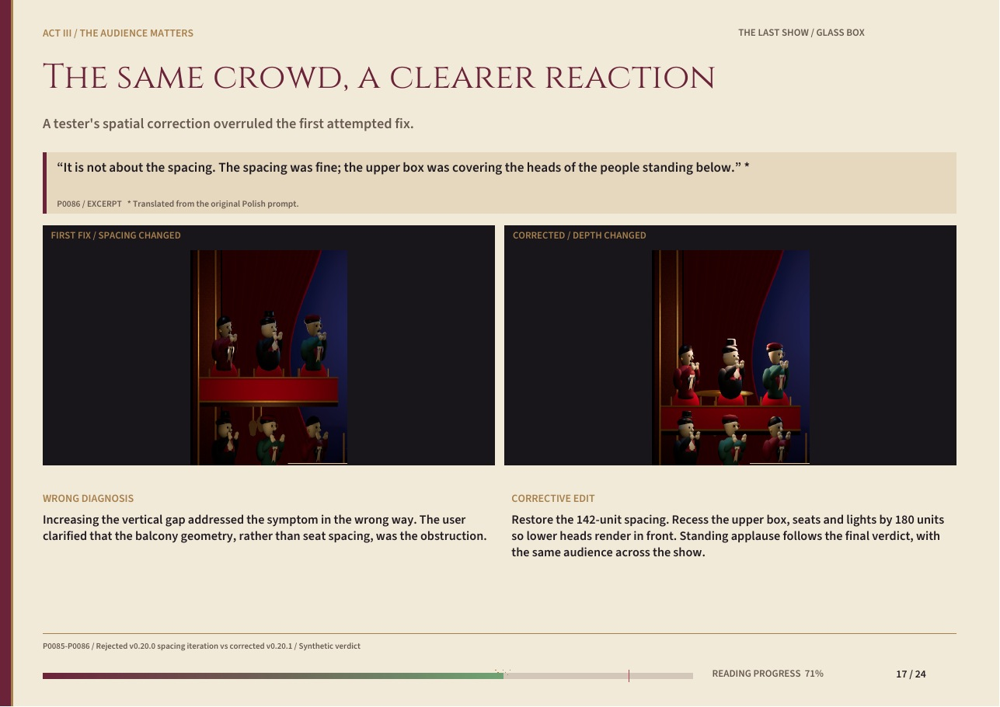
Read page 17 as text
The same crowd, a clearer reaction
A tester's spatial correction overruled the first attempted fix.
“It is not about the spacing. The spacing was fine; the upper box was covering the heads of the people standing below.” *
WRONG DIAGNOSIS
Increasing the vertical gap addressed the symptom in the wrong way. The user clarified that the balcony geometry, rather than seat spacing, was the obstruction.
CORRECTIVE EDIT
Restore the 142-unit spacing. Recess the upper box, seats and lights by 180 units so lower heads render in front. Standing applause follows the final verdict, with the same audience across the show.
P0085-P0086 / Rejected v0.20.0 spacing iteration vs corrected v0.20.1 / Synthetic verdict
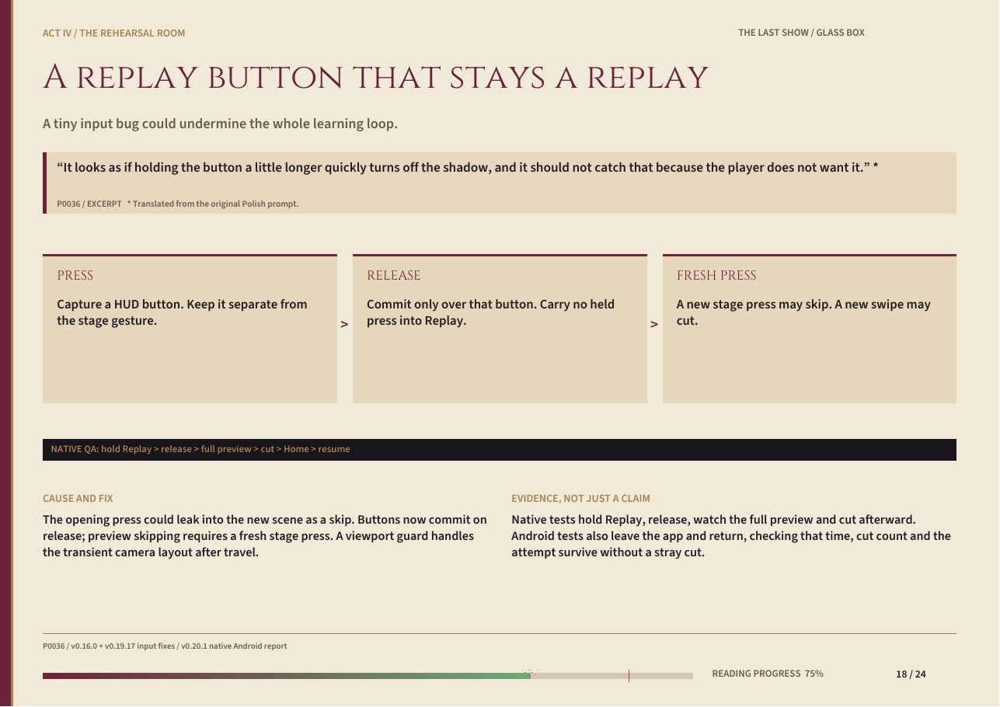
Read page 18 as text
A replay button that stays a replay
A tiny input bug could undermine the whole learning loop.
“It looks as if holding the button a little longer quickly turns off the shadow, and it should not catch that because the player does not want it.” *
CAUSE AND FIX
The opening press could leak into the new scene as a skip. Buttons now commit on release; preview skipping requires a fresh stage press. A viewport guard handles the transient camera layout after travel.
EVIDENCE, NOT JUST A CLAIM
Native tests hold Replay, release, watch the full preview and cut afterward. Android tests also leave the app and return, checking that time, cut count and the attempt survive without a stray cut.
P0036 / v0.16.0 + v0.19.17 input fixes / v0.20.1 native Android report
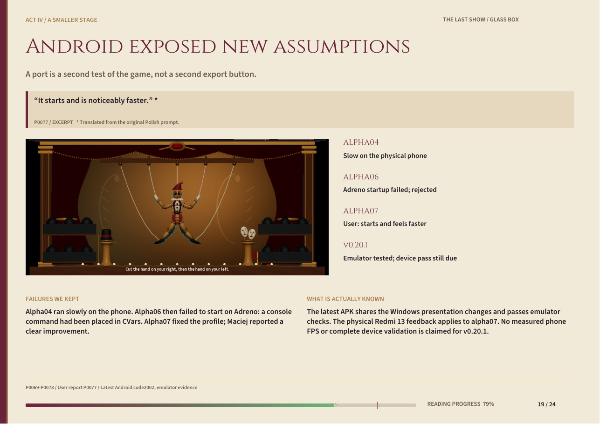
Read page 19 as text
Android exposed new assumptions
A port is a second test of the game, not a second export button.
“It starts and is noticeably faster.” *
FAILURES WE KEPT
Alpha04 ran slowly on the phone. Alpha06 then failed to start on Adreno: a console command had been placed in CVars. Alpha07 fixed the profile; Maciej reported a clear improvement.
WHAT IS ACTUALLY KNOWN
The latest APK shares the Windows presentation changes and passes emulator checks. The physical Redmi 13 feedback applies to alpha07. No measured phone FPS or complete device validation is claimed for v0.20.1.
P0069-P0078 / User report P0077 / Latest Android code2002, emulator evidence
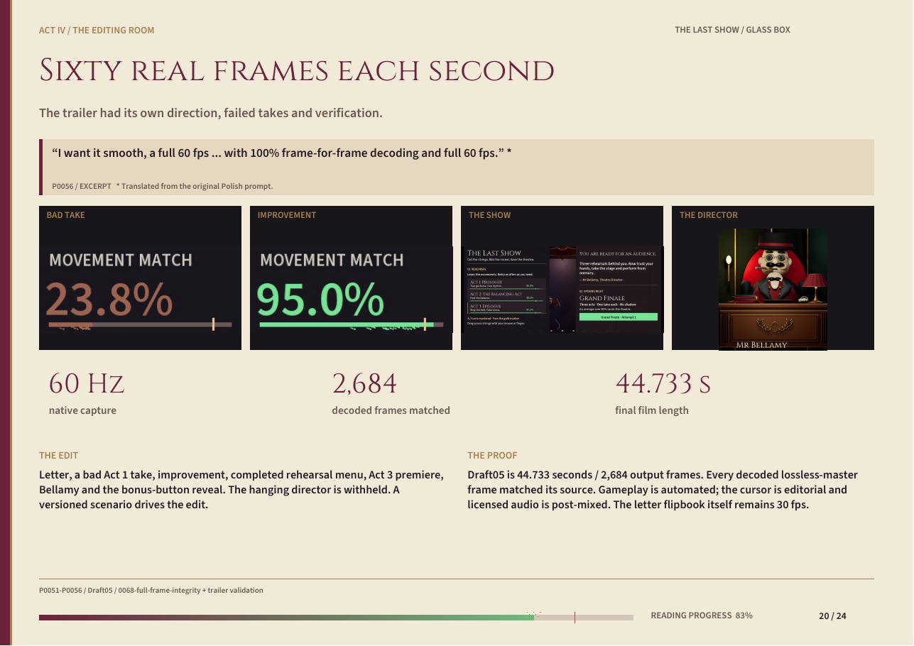
Read page 20 as text
Sixty real frames each second
The trailer had its own direction, failed takes and verification.
“I want it smooth, a full 60 fps ... with 100% frame-for-frame decoding and full 60 fps.” *
THE EDIT
Letter, a bad Act 1 take, improvement, completed rehearsal menu, Act 3 premiere, Bellamy and the bonus-button reveal. The hanging director is withheld. A versioned scenario drives the edit.
THE PROOF
Draft05 is 44.733 seconds / 2,684 output frames. Every decoded lossless-master frame matched its source. Gameplay is automated; the cursor is editorial and licensed audio is post-mixed. The letter flipbook itself remains 30 fps.
P0051-P0056 / Draft05 / 0068-full-frame-integrity + trailer validation
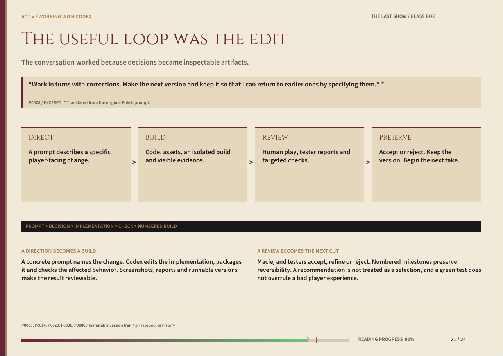
Read page 21 as text
The useful loop was the edit
The conversation worked because decisions became inspectable artifacts.
“Work in turns with corrections. Make the next version and keep it so that I can return to earlier ones by specifying them.” *
A DIRECTION BECOMES A BUILD
A concrete prompt names the change. Codex edits the implementation, packages it and checks the affected behavior. Screenshots, reports and runnable versions make the result reviewable.
A REVIEW BECOMES THE NEXT CUT
Maciej and testers accept, refine or reject. Numbered milestones preserve reversibility. A recommendation is not treated as a selection, and a green test does not overrule a bad player experience.
P0008, P0014, P0020, P0036, P0086 / Immutable version trail + private source history
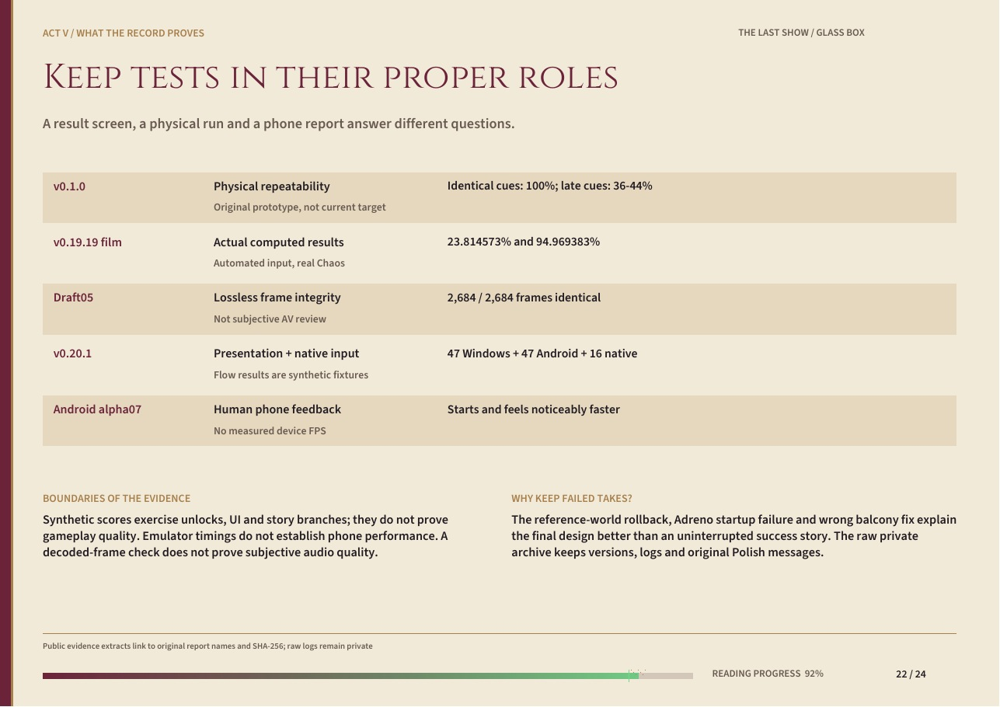
Read page 22 as text
Keep tests in their proper roles
A result screen, a physical run and a phone report answer different questions.
BOUNDARIES OF THE EVIDENCE
Synthetic scores exercise unlocks, UI and story branches; they do not prove gameplay quality. Emulator timings do not establish phone performance. A decoded-frame check does not prove subjective audio quality.
WHY KEEP FAILED TAKES?
The reference-world rollback, Adreno startup failure and wrong balcony fix explain the final design better than an uninterrupted success story. The raw private archive keeps versions, logs and original Polish messages.
Public evidence extracts link to original report names and SHA-256; raw logs remain private
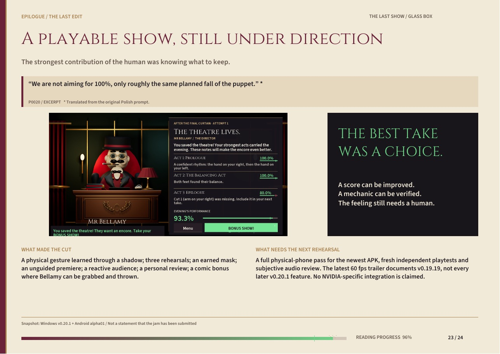
Read page 23 as text
A playable show, still under direction
The strongest contribution of the human was knowing what to keep.
“We are not aiming for 100%, only roughly the same planned fall of the puppet.” *
WHAT MADE THE CUT
A physical gesture learned through a shadow; three rehearsals; an earned mask; an unguided premiere; a reactive audience; a personal review; a comic bonus where Bellamy can be grabbed and thrown.
WHAT NEEDS THE NEXT REHEARSAL
A full physical-phone pass for the newest APK, fresh independent playtests and subjective audio review. The latest 60 fps trailer documents v0.19.19, not every later v0.20.1 feature. No NVIDIA-specific integration is claimed.
Snapshot: Windows v0.20.1 + Android alpha01 / Not a statement that the jam has been submitted
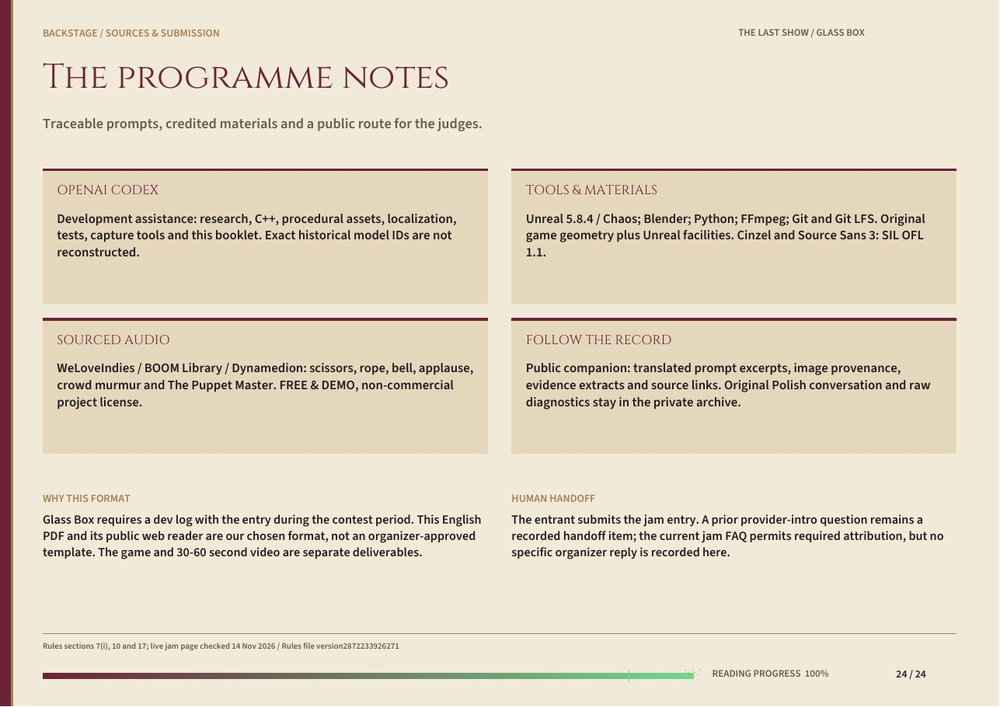
Read page 24 as text
The programme notes
Traceable prompts, credited materials and a public route for the judges.
WHY THIS FORMAT
Glass Box requires a dev log with the entry during the contest period. This English PDF and its public web reader are our chosen format, not an organizer-approved template. The game and 30-60 second video are separate deliverables.
HUMAN HANDOFF
The entrant submits the jam entry. A prior provider-intro question remains a recorded handoff item; the current jam FAQ permits required attribution, but no specific organizer reply is recorded here.
Rules sections 7(i), 10 and 17; live jam page checked 14 Nov 2026 / Rules file version2872233926271